Префектура Хоккайдо · Отару · архитектура и сладости
Старый склад у канала Отару: как LeTAO открыла в памятнике XIX века кондитерскую и бар
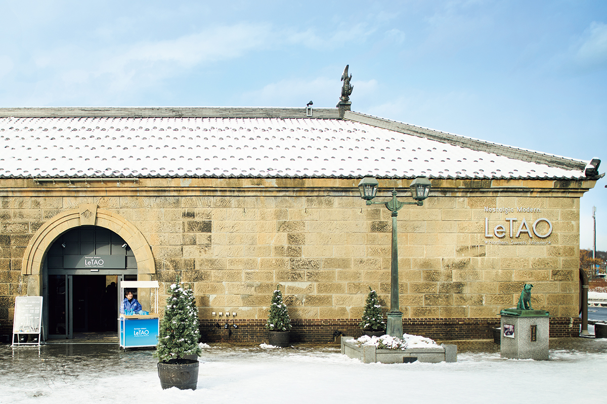
Отару разбогател на сельди, угле и портовой торговле, а после десятилетнего спора, начавшегося в 1966 году, его жители отстояли свой канал. В октябре 2024 года каменный склад XIX века на углу канала открылся заново: в нём обосновалась местная кондитерская LeTAO.
Здание
Склад, который строили четыре года
Старый склад Отару стоит у перекрёстка на дороге вдоль канала, примерно в десяти минутах пешком от станции Отару. Его возвели в 1890–1894 годах для торговых грузов, а потом много раз достраивали, пока не получился большой комплекс вокруг двух внутренних дворов. Стены каменные на деревянном каркасе, такая кладка типична именно для Отару. Крыша вальмовая, черепичная, а на коньке сидят сятихоко, фигуры рыб-драконов. Японская крыша на каменных стенах в европейском духе: так в Отару смешивали два стиля.
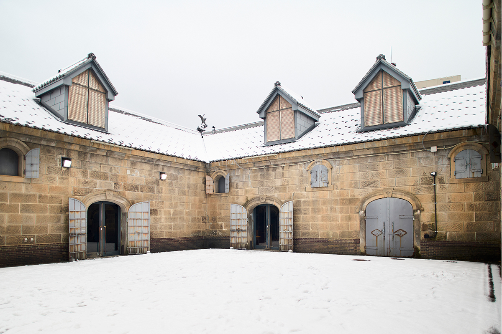
В 1985 году склад внесли в список исторических зданий Отару под номером 13. В 1990 году город открыл в его южной части «Унга Плаза», торговую площадку для туристов. Ею управляла туристическая ассоциация Отару: здесь были справочное бюро, зал отдыха, лавки и кафе, а горожане проводили в залах выставки и праздники.
Порт Отару тем временем перестраивали, и справочное бюро с магазином ассоциации переехали в новый Международный информационный центр Отару у третьего пирса. В конце марта 2024 года «Унга Плаза» закрылась. Город объявил конкурс на аренду здания, и его выиграла компания, которая делает сладости LeTAO. 11 октября 2024 года южная часть склада открылась как магазин LeTAO «Унга Плаза».
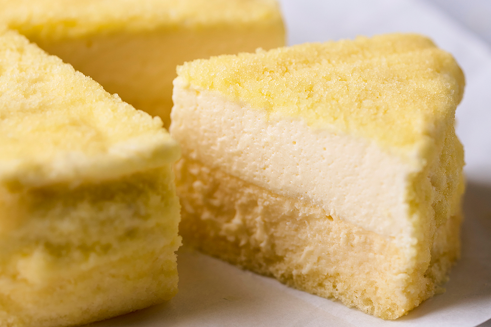
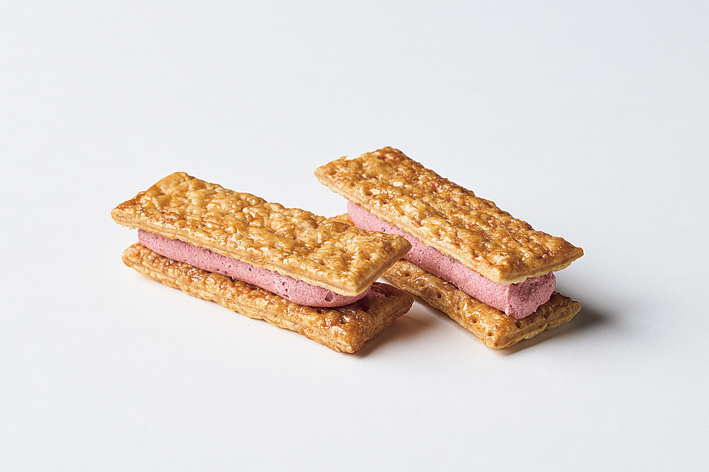
История
Город, который отстоял свой канал
«Город, похожий на сердце Хоккайдо»: так назвал Отару Такидзи Кобаяси (1903–1933), писатель, который провёл здесь юность. Позже он прославился повестью «Краболов» о моряках на плавучем консервном заводе.
С конца эпохи Эдо Отару жил ловлей сельди. Рыбаки и хозяева промыслов жили с размахом, и об этом до сих пор напоминают «сельдяные дворцы» и рыбацкие бараки на побережье. Сердцем Хоккайдо город сделала железная дорога Хоронай, которую государство проложило из глубины острова к порту Отару. В 1882 году по ней пошли поезда: на юг, на Хонсю, отправляли хоккайдский уголь, топливо модернизации Японии, а обратно везли товары для всего острова.
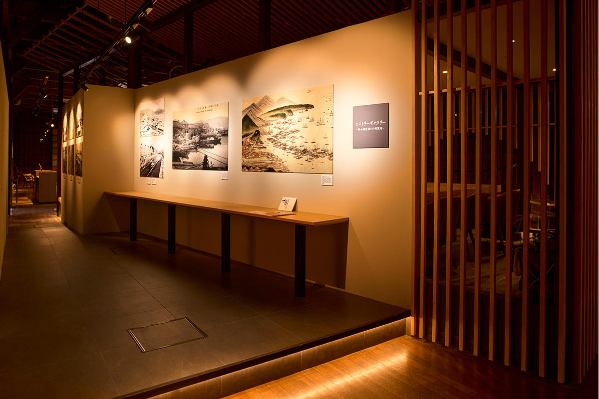
Вдоль берега выросли ряды каменных складов, а за работой сюда ехали, как на золотую лихорадку. Порт и железная дорога притянули торговые дома и банки: говорят, в Отару одновременно работали 25 банков.
После Второй мировой войны всё изменилось. Страна перешла с угля на нефть, грузы ушли в порты на тихоокеанском побережье, и в порту Отару их стало намного меньше. В 1966 году город решил засыпать канал и проложить по нему автомобильную дорогу. Каменные склады начали сносить один за другим, и горожане поднялись на защиту канала. Спор расколол Отару почти на десять лет. В итоге город пошёл на редкий для Японии шаг и изменил план: засыпали только половину канала, а вдоль оставшейся воды проложили набережную. Так появился тот вид на канал Отару, ради которого сюда едут со всего мира.
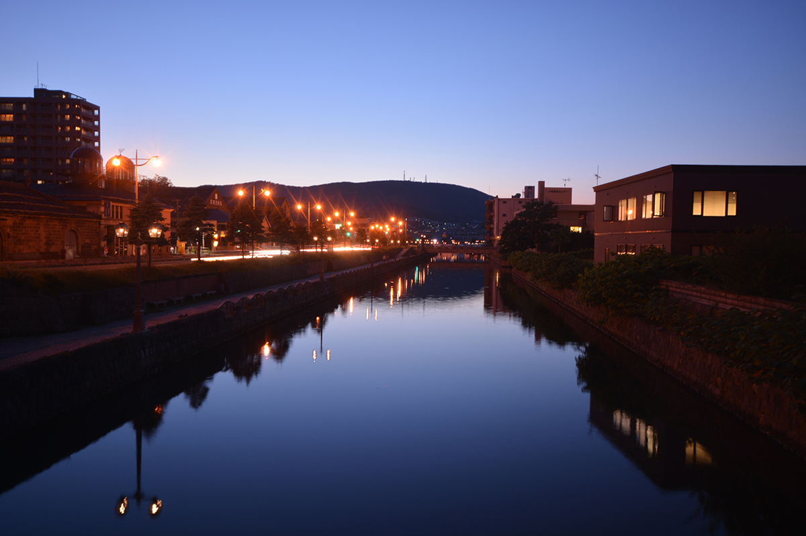
Борьба за канал оставила горожанам привычку «учиться у истории и пользоваться ею». С тех пор Отару меняют прежде всего сами жители, и нынешний город во многом их работа.
Внутри
Три склада и двор
У магазина 1726 квадратных метров: три каменных склада, первый, второй и третий, внутренний двор и передний двор у входа. Перестраивая их, LeTAO сохранила старые стены и деревянные балки. От «Унга Плаза» остались зал отдыха и место для мероприятий, открытые для всех.
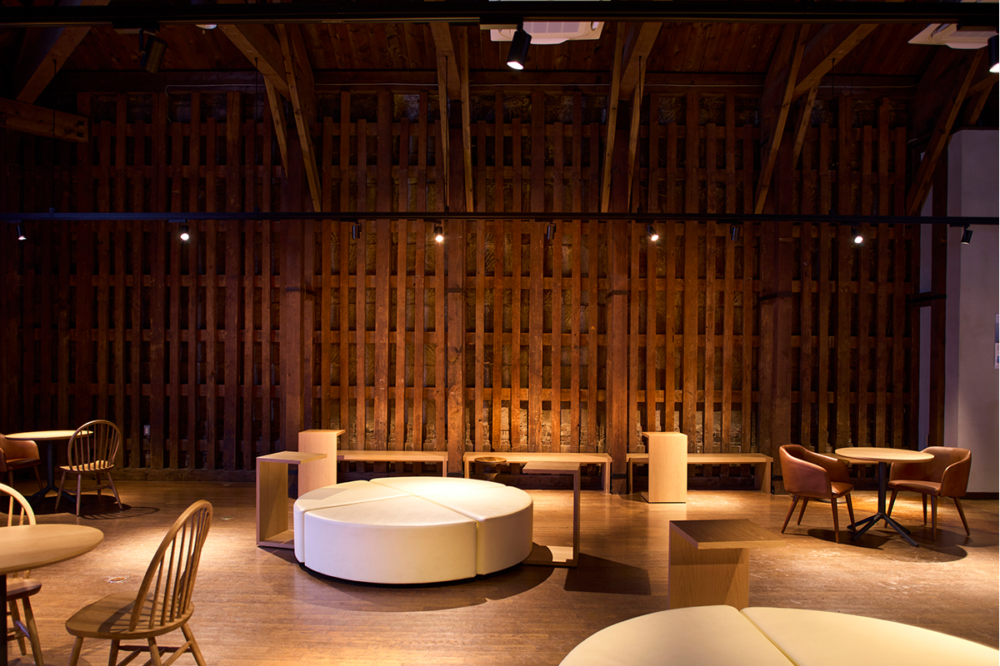
Первый склад начинается со свободной зоны: сюда заходят и горожане, и туристы, и можно есть то, что купили навынос или принесли с собой. В глубине есть комната для кормления младенцев, а рядом «Галерея истории» с рассказом о складе и о защите канала. Здесь же стойка, где продают мягкое мороженое, «Дубль фромаж» и сладости, которые есть только в этом магазине.
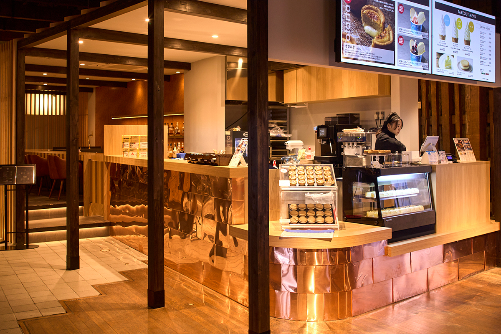
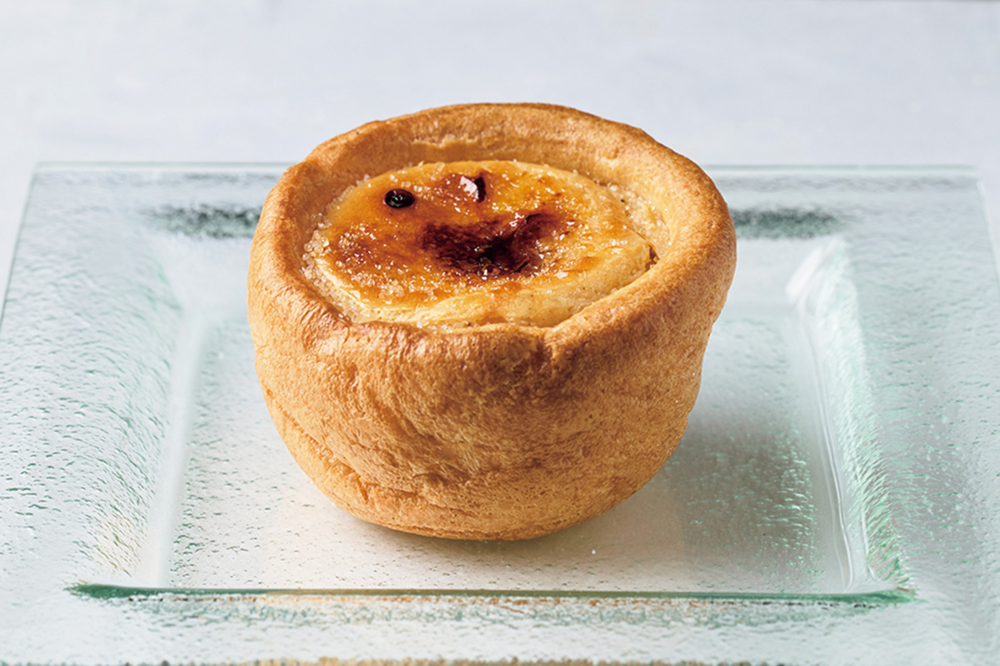
Во втором складе магазин, где лежат и привычные коробки LeTAO, и редкие сладости. Вдоль стены, выходящей во двор, специально оставили проход и превратили его в галерею работ художников Хоккайдо. В магазине хотят устраивать совместные выставки с живописцами и каллиграфами.
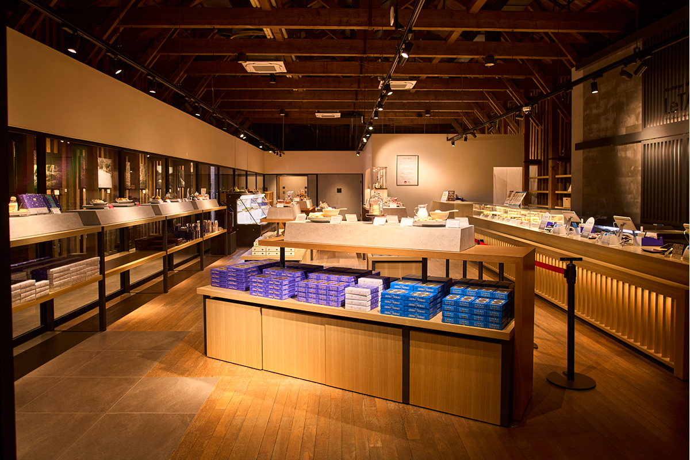
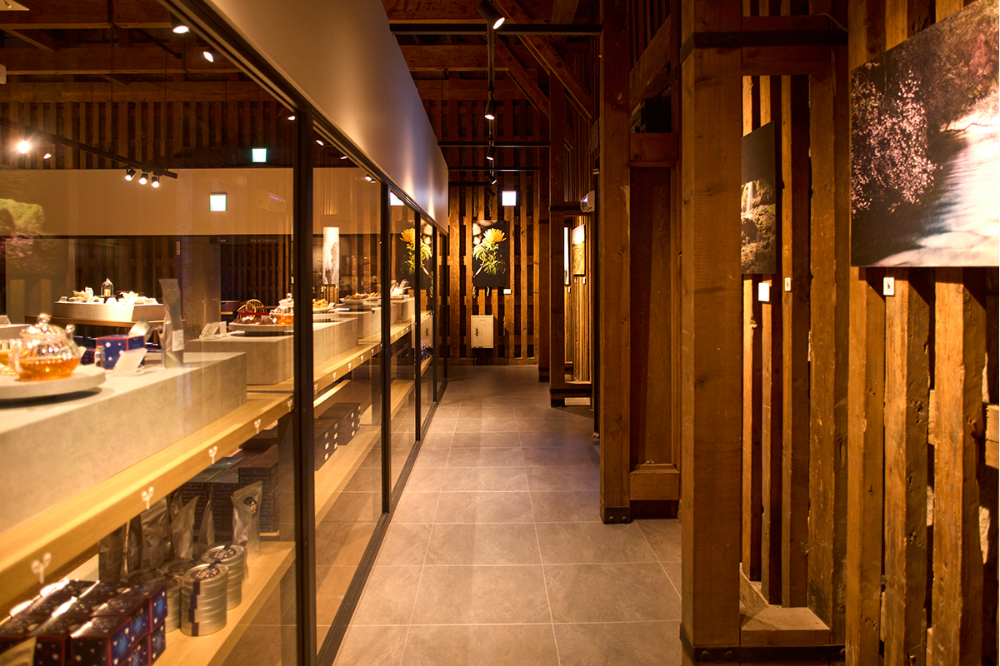
В Отару мало мест, где можно провести вечер, и LeTAO впервые в своей истории открыла бар. В баре подают авторские коктейли и парфе, которым удобно завершить вечер. Парфе «Джерси и фисташка» советуют есть с виски-коктейлем «Расти нейл».
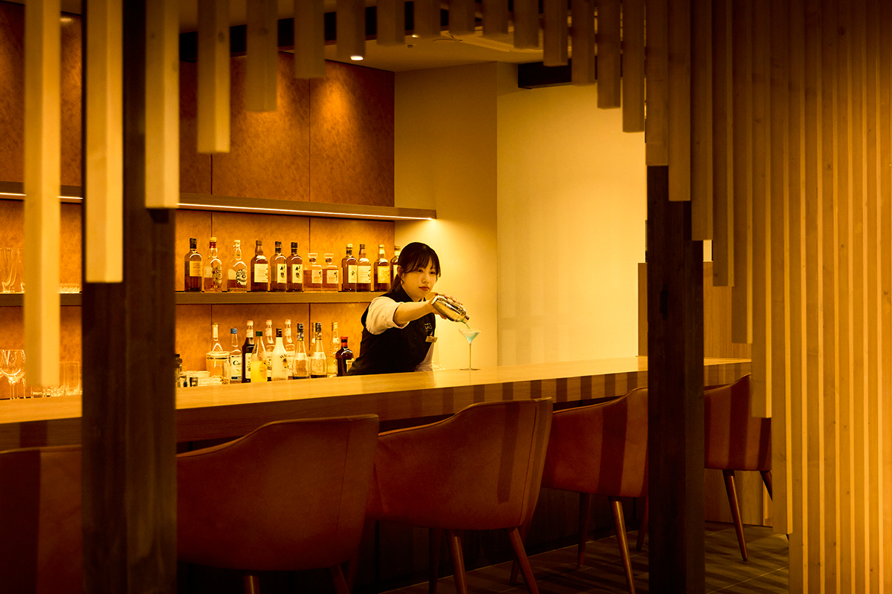
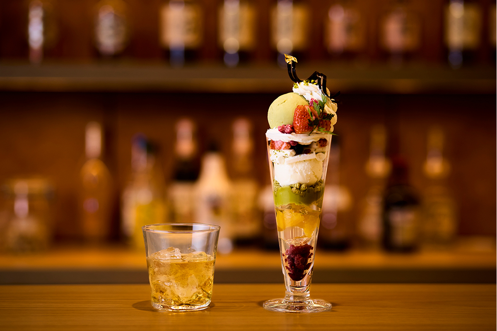
Третий склад отдали под кафе-ресторан. Открыть его собирались весной 2025 года, с темой «отарианская кухня», смесью Отару и Италии, и по возможности на местных продуктах.
«Отару рос, впитывая разные культуры, и до сих пор хранит свою прелесть. Мы взяли с него пример и назвали концепцию магазина „ностальгический модерн“: беречь историю и при этом создавать новое»
член правления компании, руководивший открытием магазина
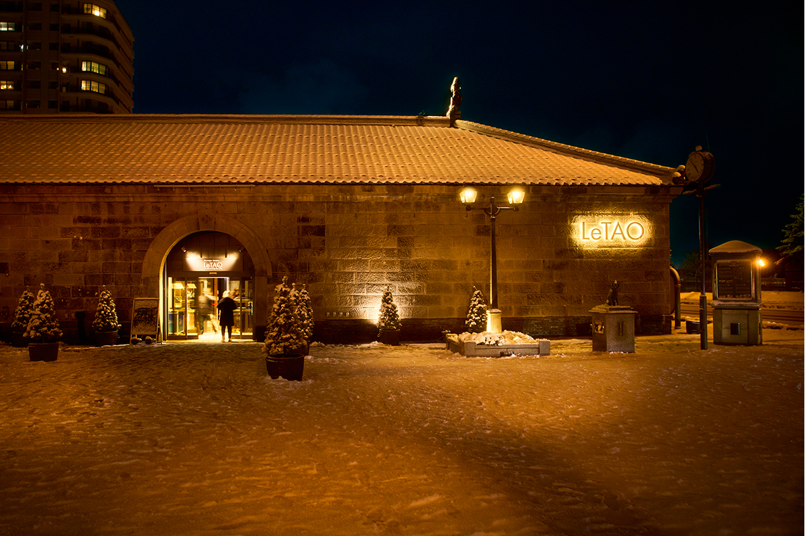
LeTAO «Унга Плаза»
- Адрес
- префектура Хоккайдо, Отару, Иронай, 2-1-20
- Телефон
- +81 134-64-1001
- Часы работы
- первый склад: свободная зона 10:00–22:00, стойка навынос 10:00–22:00 (последний заказ 21:00), бар 13:00–22:00 (последний заказ 21:00), парфе и коктейли с 18:00; второй склад: магазин 10:00–18:00
- Выходные
- без выходных
- Как добраться
- около 10 минут пешком от станции Отару
- Сайт
- letao-brand.jp
LeTAO
Кондитерская, которая начинала с одного пирожного
LeTAO открылась в 1998 году на перекрёстке Мерхен, в самом туристическом месте Отару, на улице Сакаимати. Название составлено из первых букв французской фразы «La Tour Amitié Otaru», «дорогая башня Отару», и созвучно названию самого города.
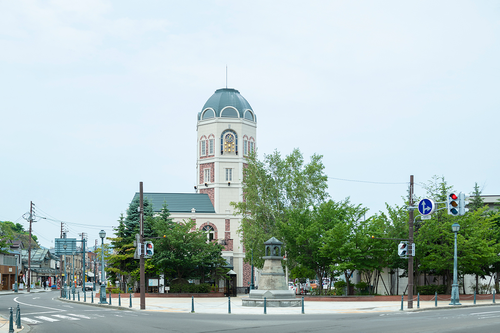
Компания, которая делает LeTAO, входит в кондитерскую группу из префектуры Тоттори и была основана в 1996 году в городе Титосэ на Хоккайдо. Начало, по словам главы компании, было трудным: сладости почти не покупали. Чтобы горожане их узнали, LeTAO бесплатно привозила по Отару даже одно заварное пирожное, а у входа раздавала пробовать. Местные покупатели привыкли к кондитерской не сразу. К 2025 году у неё семь магазинов в городе, включая улицу Сакаимати и площадь у станции.
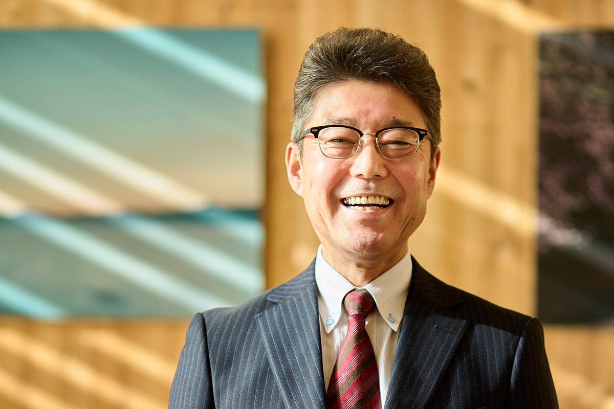
«Нам доверили историческое здание, которое горожане любят много лет. Значит, LeTAO хоть немного смогла отплатить Отару. Бар для нас тоже впервые, и сотрудники с удовольствием подбирают парфе на завершение вечера и напитки к сладостям. Мы хотим выйти за пределы кондитерской и оживлять Отару через еду вообще»
глава компании, которая делает LeTAO
Город
Отару, где хочется остаться на ночь
Отару близко к Саппоро, и туристы долго приезжали сюда на несколько часов. После пандемии в городе задумали две большие гостиницы, и мэрия хочет, чтобы гости оставались на ночь. Ключ к этому мэр видит в вечерней жизни: поэтому бар в складе работает до 22:00, а Международный информационный центр Отару, открытый весной 2024 года, до 20:00.
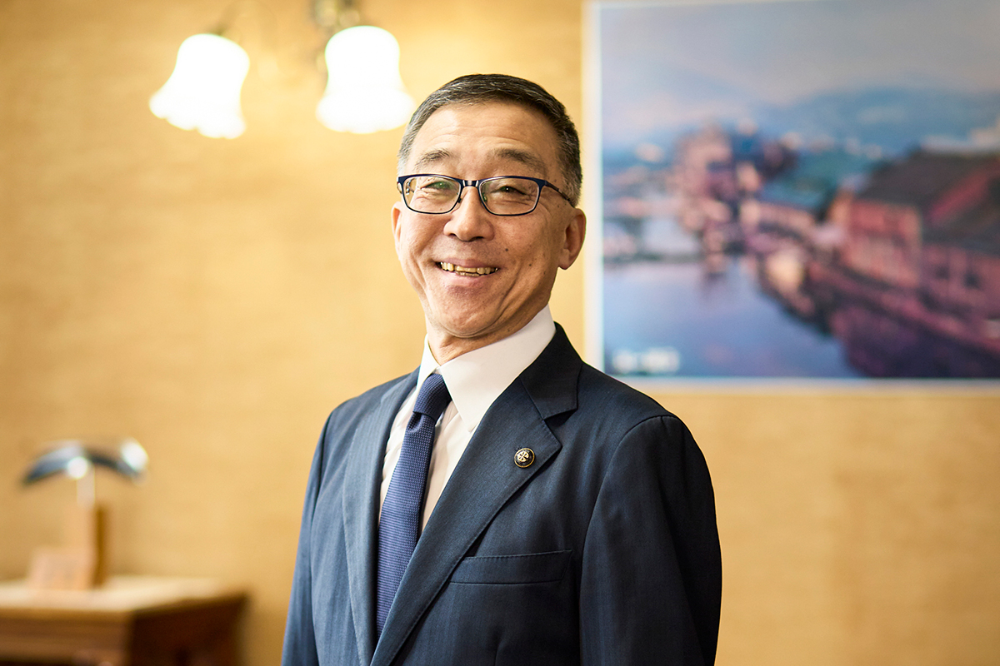
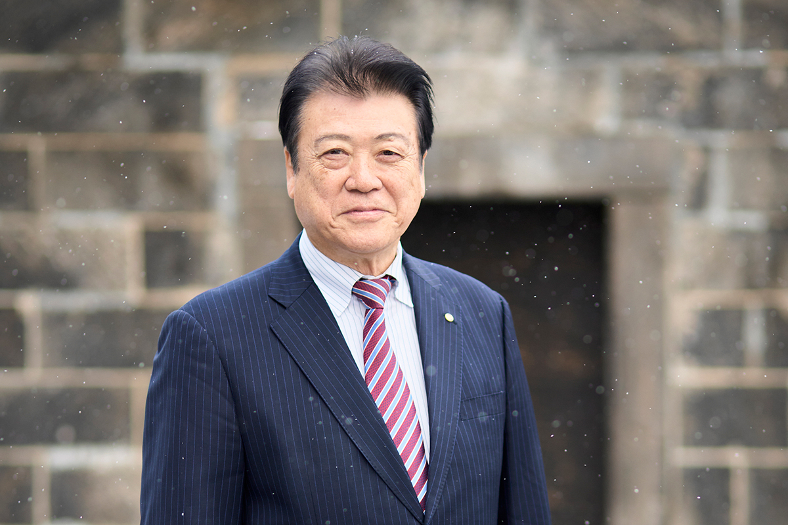
Склад стоит в начале приморской части города. Отсюда можно пройти к третьему пирсу, где весной 2023 года открылся круизный терминал, а в 2024 году достроили причал для лайнеров класса 140 000 тонн. Дальше начинается северная часть канала: там город решил сохранить вместе с каналом старый третий склад завода жестяных банок.
В информационный центр у пирса переехал магазин туристической ассоциации, где продают сувениры Отару и соседних мест. У центра парковка на 320 машин, и от неё до канала можно дойти пешком. По словам председателя ассоциации, улица Сакаимати любима туристами из Азии, а тихая северная часть канала могла бы понравиться европейцам.
«Жители Отару очень любят свой город. В городских проектах участвуют даже школьники и студенты»
председатель туристической ассоциации Отару
Фото: Кэндзи Окадзаки.